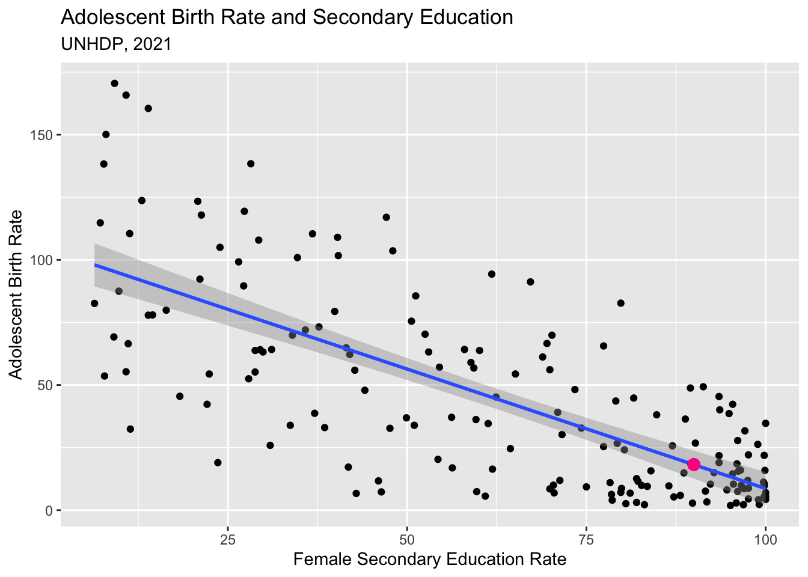

library(tidyverse)
hdi <- read_csv("https://raw.githubusercontent.com/mjclawrence/soci385_f23/main/data/hdi/hdi.csv")Regression With Binary and Categorical Variables
Setting Up
We’ll use the hdi.csv file again today. Load it as a data frame called hdi and load the usual packages.
Warm Up
The adolescent birth rate (adolescent_birth_rate) is the number of births per 1,000 women ages 15-19. The female secondary education rate (secondary_educ_female) is the percentage of females ages 25 or older in the population who have completed at least some secondary education. Regress the adolescent birth rate on the female secondary education rate.
REPLACE THIS LINE WITH YOUR CODE CHUNK
birthrate_seceduc_model <-
lm(adolescent_birth_rate ~ secondary_educ_female,
data = hdi)
summary(birthrate_seceduc_model)
Call:
lm(formula = adolescent_birth_rate ~ secondary_educ_female, data = hdi)
Residuals:
Min 1Q Median 3Q Max
-62.581 -15.571 -2.331 16.537 75.170
Coefficients:
Estimate Std. Error t value Pr(>|t|)
(Intercept) 104.11409 4.76590 21.85 <2e-16 ***
secondary_educ_female -0.95477 0.06922 -13.79 <2e-16 ***
---
Signif. codes: 0 '***' 0.001 '**' 0.01 '*' 0.05 '.' 0.1 ' ' 1
Residual standard error: 26.87 on 168 degrees of freedom
Multiple R-squared: 0.531, Adjusted R-squared: 0.5282
F-statistic: 190.2 on 1 and 168 DF, p-value: < 2.2e-16Using this model, find the predicted adolescent birth rate when 90% of female residents of a country complete some secondary education.
REPLACE THIS LINE WITH YOUR CODE
#Model: y = 104.11409 - 0.95477X
104.11409 - 0.95477*90[1] 18.18479We should be able to locate that prediction on our line:
`geom_smooth()` using formula = 'y ~ x'
Binary Independent Variables
Using binary and categorical variables as independent variables in regression models offers alternative ways to find means between groups.
Before regression, how would you compare the mean adolescent birth rate for countries in the highest category of human development (hdi >= 80) and the mean adolescent birth rate for all other countries?
REPLACE THIS LINE WITH YOUR CODE CHUNK
mean(hdi$adolescent_birth_rate[hdi$hdi>=80])[1] 13.50968mean(hdi$adolescent_birth_rate[hdi$hdi<80])[1] 62.83333What is the difference between these means?
REPLACE THIS LINE WITH YOUR CODE CHUNK
62.83333 - 13.50968[1] 49.32365May be more efficient to create a binary variable, and then use group_by() and summarise()
hdi <- hdi |>
mutate(hdi_rank_hi = ifelse(hdi >= 80, 1, 0))hdi |>
group_by(hdi_rank_hi) |>
summarise(mean(adolescent_birth_rate))# A tibble: 2 × 2
hdi_rank_hi `mean(adolescent_birth_rate)`
<dbl> <dbl>
1 0 62.8
2 1 13.5And the difference again is 49.324.
Regressing adolescent_birth_rate on hdi_rank_hi will give us the exact same information:
birthrate_rankhi_model <-
lm(adolescent_birth_rate ~ hdi_rank_hi,
data = hdi)
summary(birthrate_rankhi_model)
Call:
lm(formula = adolescent_birth_rate ~ hdi_rank_hi, data = hdi)
Residuals:
Min 1Q Median 3Q Max
-56.13 -14.48 -4.46 12.55 107.67
Coefficients:
Estimate Std. Error t value Pr(>|t|)
(Intercept) 62.833 2.996 20.970 <2e-16 ***
hdi_rank_hi -49.324 4.962 -9.941 <2e-16 ***
---
Signif. codes: 0 '***' 0.001 '**' 0.01 '*' 0.05 '.' 0.1 ' ' 1
Residual standard error: 31.14 on 168 degrees of freedom
Multiple R-squared: 0.3704, Adjusted R-squared: 0.3666
F-statistic: 98.82 on 1 and 168 DF, p-value: < 2.2e-16As with continuous variables, the intercept (\(\alpha\)) is the mean value of our dependent variable, Y, when our independent variable, X, is 0. The coefficient for our independent variable (\(\beta\)) is the difference in the mean of our dependent variable between cases with a 0 and 1 for our independent variable.
The t value and p value are for a t-test of the difference with one small change. OLS requires the assumption that the sample variances are equal:
t.test(hdi$adolescent_birth_rate[hdi$hdi_rank_hi==1],
hdi$adolescent_birth_rate[hdi$hdi_rank_hi==0],
var.equal = TRUE)
Two Sample t-test
data: hdi$adolescent_birth_rate[hdi$hdi_rank_hi == 1] and hdi$adolescent_birth_rate[hdi$hdi_rank_hi == 0]
t = -9.941, df = 168, p-value < 2.2e-16
alternative hypothesis: true difference in means is not equal to 0
95 percent confidence interval:
-59.11881 -39.52850
sample estimates:
mean of x mean of y
13.50968 62.83333 Use regression to test the significance of the difference in the maternal mortality ratio between countries where higher percentages of females than males completed some secondary education. Use the maternal_mortality_ratio variable. Create the education variable; call it female_more_schl.
REPLACE THIS LINE WITH YOUR CODE CHUNK
Create the education variable:
hdi <- mutate(hdi, female_more_schl = ifelse(secondary_educ_female>secondary_educ_male,1,0))Use the new female_more_schl variable in the regression model:
summary(lm(maternal_mortality_ratio ~ female_more_schl, data = hdi))
Call:
lm(formula = maternal_mortality_ratio ~ female_more_schl, data = hdi)
Residuals:
Min 1Q Median 3Q Max
-183.87 -168.87 -52.36 50.64 964.13
Coefficients:
Estimate Std. Error t value Pr(>|t|)
(Intercept) 185.87 19.98 9.301 < 2e-16 ***
female_more_schl -125.02 41.72 -2.997 0.00314 **
---
Signif. codes: 0 '***' 0.001 '**' 0.01 '*' 0.05 '.' 0.1 ' ' 1
Residual standard error: 228.7 on 168 degrees of freedom
Multiple R-squared: 0.05074, Adjusted R-squared: 0.04509
F-statistic: 8.979 on 1 and 168 DF, p-value: 0.003144Categorical Independent Variables
When your independent variable has more than one category, one category becomes the reference group. The \(\alpha\) is the average for that reference group. The coefficients are the differences in means for each other category compared to the reference group. The t-test compares the differences in means to the null hypothesis that the real difference between the reference group and the given category is actually zero.
Create a new variable called hdi_cat which has four categories of hdi: 80+, 70-79, 55-69, Less than 55.
hdi <- mutate(hdi, hdi_cat =
ifelse(hdi >= 80, 1,
ifelse(hdi >= 70 & hdi < 80, 2,
ifelse(hdi >= 55 & hdi < 70, 3, 4))))Regress the adolescent birth rate variable on this new hdi categorical variable:
Without factor:
birthrate_hdi_model1 <- lm(adolescent_birth_rate ~ hdi_cat, data = hdi)
summary(birthrate_hdi_model1)
Call:
lm(formula = adolescent_birth_rate ~ hdi_cat, data = hdi)
Residuals:
Min 1Q Median 3Q Max
-62.722 -11.416 -2.774 12.633 75.378
Coefficients:
Estimate Std. Error t value Pr(>|t|)
(Intercept) -16.605 4.013 -4.138 5.54e-05 ***
hdi_cat 27.932 1.627 17.165 < 2e-16 ***
---
Signif. codes: 0 '***' 0.001 '**' 0.01 '*' 0.05 '.' 0.1 ' ' 1
Residual standard error: 23.65 on 168 degrees of freedom
Multiple R-squared: 0.6369, Adjusted R-squared: 0.6347
F-statistic: 294.6 on 1 and 168 DF, p-value: < 2.2e-16The above chunk isn’t what we want. When a variable has multiple categories, make sure R knows the variable is a factor variable. There are two options for how to do this.
First, you could use the variable as a factor just for this model:
birthrate_hdicat_model2 <-
lm(adolescent_birth_rate ~ factor(hdi_cat), # Asserts hdi_cat is a factor
data = hdi)
summary(birthrate_hdicat_model2)
Call:
lm(formula = adolescent_birth_rate ~ factor(hdi_cat), data = hdi)
Residuals:
Min 1Q Median 3Q Max
-66.18 -10.86 -3.31 11.71 73.22
Coefficients:
Estimate Std. Error t value Pr(>|t|)
(Intercept) 13.510 2.998 4.507 1.24e-05 ***
factor(hdi_cat)2 21.776 4.717 4.616 7.79e-06 ***
factor(hdi_cat)3 51.671 4.946 10.447 < 2e-16 ***
factor(hdi_cat)4 85.074 5.250 16.206 < 2e-16 ***
---
Signif. codes: 0 '***' 0.001 '**' 0.01 '*' 0.05 '.' 0.1 ' ' 1
Residual standard error: 23.6 on 166 degrees of freedom
Multiple R-squared: 0.6425, Adjusted R-squared: 0.6361
F-statistic: 99.46 on 3 and 166 DF, p-value: < 2.2e-16Second, you could make the variable a factor in your data frame (and add labels if you want), and then use your factor variable in the model without the need to restate that it is a factor variable:
hdi <- mutate(hdi, hdi_cat = factor(hdi_cat,
labels = c("Very High", "High", "Medium" ,"Low")))
birthrate_hdicat_model3 <-
lm(adolescent_birth_rate ~ hdi_cat,
data = hdi)
summary(birthrate_hdicat_model3)
Call:
lm(formula = adolescent_birth_rate ~ hdi_cat, data = hdi)
Residuals:
Min 1Q Median 3Q Max
-66.18 -10.86 -3.31 11.71 73.22
Coefficients:
Estimate Std. Error t value Pr(>|t|)
(Intercept) 13.510 2.998 4.507 1.24e-05 ***
hdi_catHigh 21.776 4.717 4.616 7.79e-06 ***
hdi_catMedium 51.671 4.946 10.447 < 2e-16 ***
hdi_catLow 85.074 5.250 16.206 < 2e-16 ***
---
Signif. codes: 0 '***' 0.001 '**' 0.01 '*' 0.05 '.' 0.1 ' ' 1
Residual standard error: 23.6 on 166 degrees of freedom
Multiple R-squared: 0.6425, Adjusted R-squared: 0.6361
F-statistic: 99.46 on 3 and 166 DF, p-value: < 2.2e-16To change the reference group, use relevel(). In this example, we will make the “Low” category the reference group:
hdi$hdi_cat <-
relevel(hdi$hdi_cat, ref = "Low")
birthrate_hdi_model4 <-
lm(adolescent_birth_rate ~
hdi_cat,
data = hdi)
summary(birthrate_hdi_model4)
Call:
lm(formula = adolescent_birth_rate ~ hdi_cat, data = hdi)
Residuals:
Min 1Q Median 3Q Max
-66.18 -10.86 -3.31 11.71 73.22
Coefficients:
Estimate Std. Error t value Pr(>|t|)
(Intercept) 98.583 4.310 22.876 < 2e-16 ***
hdi_catVery High -85.074 5.250 -16.206 < 2e-16 ***
hdi_catHigh -63.298 5.642 -11.218 < 2e-16 ***
hdi_catMedium -33.403 5.835 -5.724 4.75e-08 ***
---
Signif. codes: 0 '***' 0.001 '**' 0.01 '*' 0.05 '.' 0.1 ' ' 1
Residual standard error: 23.6 on 166 degrees of freedom
Multiple R-squared: 0.6425, Adjusted R-squared: 0.6361
F-statistic: 99.46 on 3 and 166 DF, p-value: < 2.2e-16Categorical Dependent Variables
Like a model with a continuous dependent variable, an OLS model with a binary dependent variable estimates the mean of that dependent variable. The mean of a binary variable is the probability of having a 1 for that variable, so this is called a linear probability model.
Let’s go back to our variable identifying countries where higher percentages of females than males complete some secondary education (female_more_schl). Regress this measure on schooling_mean which is the average years of schooling completed by a country’s residents.
REPLACE THIS LINE WITH YOUR CODE CHUNK
femalemore_schooling_model1 <-
lm(female_more_schl ~
schooling_mean,
data = hdi)
summary(femalemore_schooling_model1)
Call:
lm(formula = female_more_schl ~ schooling_mean, data = hdi)
Residuals:
Min 1Q Median 3Q Max
-0.36336 -0.28966 -0.16858 -0.05473 0.84985
Coefficients:
Estimate Std. Error t value Pr(>|t|)
(Intercept) -0.007784 0.093984 -0.083 0.93409
schooling_mean 0.026322 0.009816 2.682 0.00806 **
---
Signif. codes: 0 '***' 0.001 '**' 0.01 '*' 0.05 '.' 0.1 ' ' 1
Residual standard error: 0.4142 on 168 degrees of freedom
Multiple R-squared: 0.04105, Adjusted R-squared: 0.03534
F-statistic: 7.191 on 1 and 168 DF, p-value: 0.008058We’ll wrap up with a model that has categorical dependent and independent variables. Regress female_more_schl on hdi_cat:
REPLACE THIS LINE WITH YOUR CODE CHUNK
femalemore_hdi_model2 <-
lm(female_more_schl ~
hdi_cat,
data = hdi)
summary(femalemore_hdi_model2)
Call:
lm(formula = female_more_schl ~ hdi_cat, data = hdi)
Residuals:
Min 1Q Median 3Q Max
-0.45238 -0.22581 -0.13889 -0.03333 0.96667
Coefficients:
Estimate Std. Error t value Pr(>|t|)
(Intercept) 0.03333 0.07297 0.457 0.6484
hdi_catVery High 0.19247 0.08889 2.165 0.0318 *
hdi_catHigh 0.41905 0.09554 4.386 2.04e-05 ***
hdi_catMedium 0.10556 0.09880 1.068 0.2869
---
Signif. codes: 0 '***' 0.001 '**' 0.01 '*' 0.05 '.' 0.1 ' ' 1
Residual standard error: 0.3997 on 166 degrees of freedom
Multiple R-squared: 0.1177, Adjusted R-squared: 0.1018
F-statistic: 7.382 on 3 and 166 DF, p-value: 0.0001132